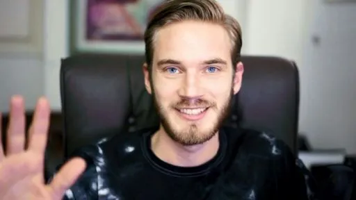

Felix Arvid Ulf Kjellberg (/ˈʃɛlbɜːrɡ/ SHEL-burg, Swedish: [ˈfěːlɪks ˈǎrːvɪd ɵlf ˈɕɛ̂lːbærj];[3] born 24 October 1989), better known as PewDiePie (/ˈpjuːdiːpaɪ/ PEW-dee-py), is a Swedish YouTuber known for his Let's Play videos and comedic formatted videos and shows. Kjellberg's popularity on YouTube and extensive media coverage have made him one of the most noted online personalities and content creators. He has been portrayed in the media as a figurehead for YouTube and as being almost synonymous with YouTube gaming. In 2016, Time magazine named him as one of the world's 100 most influential people.
Born and raised in Gothenburg, Kjellberg registered his YouTube channel "PewDiePie" in 2010, primarily posting Let's Play videos of horror and action video games. His channel experienced substantial growth in popularity in the following years, being one of the fastest growing channels in 2012 and 2013, and becoming the most-subscribed on YouTube on 15 August 2013. Over time, his style of content diversified to include vlogs, comedy shorts, formatted shows, and music videos. From 2015 to 2018, his content also shifted away from Let's Play content and became increasingly subject to media controversies. In 2019, following a public competition with Indian record label T-Series, Kjellberg was overtaken as the most-subscribed YouTube channel. His channel currently holds the title of the fourth-most subscribed, albeit remaining the most-subscribed YouTube channel owned by an individual. Kjellberg had the most-viewed channel on YouTube from 29 December 2014 to 14 February 2017, and the channel currently ranks as the 25th-most-viewed, and the sixth among those owned by an individual. As of March 2022, his channel has over 111 million subscribers and has received 28.2 billion total views.[4] His popularity online boosts sales for the titles he plays, and has allowed him to stir support for charity fundraising drives.
On 5 October 2018, Kjellberg uploaded a diss track against Indian record label T-Series titled "TSERIES DISS TRACK" (later renamed "Bitch Lasagna")[124] in response to their YouTube channel being projected to surpass his in subscribers.[125] The video went on to replace "A Funny Montage" as Kjellberg's most-viewed video; as of 25 April 2020, the video has accumulated over 245 million views.[126] It included some lines mocking the Indian background of T-Series, such as the line "Your language sounds like it come [sic] from a mumble rap community" which have been described as racist in media publications, as well as in a court ruling from the High Court of Delhi.[127][128] Kjellberg also made allegations against T-Series using subscribing bots but failed to prove so, as YouTube claims to have a strong policy against fake-engagement.[129][130] On the prospect of being surpassed by T-Series in terms of subscriber count, he stated he was not concerned about T-Series, but feared the consequences a corporate channel surpassing him would have for YouTube as a video-sharing platform.[131] Online campaigns to "subscribe to PewDiePie" greatly assisted Kjellberg's subscriber growth; his channel gained 6.62 million subscribers in December 2018 alone, compared to the 7 million subscribers gained in all of 2017.[132] On 12 March, Kjellberg uploaded an episode of his show Pew News in which he mentioned the 2019 Pulwama terrorist attack, where 40 Indian paramilitary troops were killed by a member of a Pakistan-based jihadist group. Following the attack, T-Series removed several songs by Pakistani artists on its YouTube channel after being pressurised by political party MNS to isolate Pakistani artists, a course of action that Kjellberg disagreed with.[133][134] The outlet Zee News reported that Kjellberg "faced strong criticism for his comments on the heightened tension between Pakistan and India in [the] March 12 issue of Pew News".[135] Kjellberg also issued a clarification on Twitter, expressing that he was not attempting to speak on the broader India–Pakistan relations, but rather on the more specific context of T-Series removing artists' songs from its YouTube channel.[135] On 15 March, the perpetrator of the live-streamed Christchurch mosque shootings said "remember lads, subscribe to PewDiePie" before carrying out the attacks. In response, Kjellberg tweeted his disgust after having his name associated with the attack, and offered condolences to those affected by the tragedy.[136] Various journalists covering the shooting reported that Kjellberg was not complicit with the shootings.[137] The New York Times suggested that Kjellberg's mention in the shootings was a ploy for the news media to attribute blame to Kjellberg, and to otherwise inflame political tensions.[138] After briefly gaining the title several times in early 2019, on 27 March, T-Series surpassed Kjellberg in subscribers to become the most-subscribed channel on YouTube.[139] On 31 March, Kjellberg posted another diss track music video, titled "Congratulations", ironically congratulating T-Series for obtaining the title.[140][141][‡ 9] Many of the song's lyrics were performed in a sarcastic tone, at the expense of T-Series.[142] In the music video, Kjellberg mocked T-Series and its actions, alleging T-Series was founded to sell pirated songs and mocking them for sending him a cease and desist letter after "Bitch Lasagna", alleging that his actions and words in that first diss track were defamatory. He also mentioned the CEO of T-Series' tax evasion scandal, collusions with the Mumbai mafia, and #MeToo allegations.[140] The day after the video's upload, Kjellberg temporarily regained his lead over T-Series as the most subscribed channel.[143] On 9 April 2019, Kjellberg announced that he would live-stream exclusively on streaming service DLive, as part of a deal with the company.[144][145] On 11 April, T-Series started to seek court orders to remove Kjellberg's "diss tracks" from YouTube.[146][147] According to entertainment and law website Iprmentlaw, T-Series sought out a court order from the High Court of Delhi to remove Kjellberg's "Bitch Lasagna" and "Congratulations" from YouTube. The alleged court order was ruled in favor of T-Series. It was allegedly stated that the complaint against Kjellberg claimed that his songs were "defamatory, disparaging, insulting, and offensive", and noted that comments on the videos were "abusive, vulgar, and also racist in nature."[128][148][149] Access to the music videos on YouTube was later blocked in India.[149] The two parties were reported to have come to a settlement later that July, although Kjellberg's videos remained blocked in India.[149] Finally, on 28 April, Kjellberg uploaded a video entitled "Ending the Subscribe to Pewdiepie Meme" in which he asked his followers to refrain from using the phrase "Subscribe to PewDiePie", due to incidents such as the phrase being graffitied on a war memorial, and its mention by the Christchurch mosque shooter.[150][151] The following day, during a live stream, Kjellberg showed a plane flying over New York City with a banner attached saying "Subscribe to PewDiePie". Kjellberg stated that the event was "a nice little wrap up" to the Subscribe to PewDiePie meme.[152] Nimses controversy, Minecraft series, and ban in China (2019–2020) In early June, Kjellberg uploaded a video on YouTube sponsored by social media application Nimses.[153] The app spiked in popularity after he promoted it on his YouTube channel, becoming the 20th most popular social media app on the Apple App Store.[154] Controversy ensued, however, when Nimses' location features and privacy settings led fans of Kjellberg and fellow YouTubers to believe that he was promoting a privacy-invasive app, with some fans suspecting the app of being a pyramid scheme due to a referral program in the app that offered more in-application currency.[154][155] The Pirate Party Germany also criticized his promotion of Nimses, warning that Kjellberg was promoting a potentially harmful app to a large audience.[155] Andrey Boborykin, the head of marketing and communications at Nimses, published a blog post denying the allegations that the app is privacy-invasive.[155] Kjellberg himself also responded to the allegations in a video, dismissing them as "rumors", and claimed that Nimses was no more invasive than other social media apps, saying that, "They're not paying me to defend these allegations, but you're just going off rumors. If you're worried about your privacy, by all means, don't sign up for a social media network."[154] On 21 June, Kjellberg launched Gaming Week, during which he would focus on uploading Let's Play videos every day, for the first time in several years. Among the games played were Minecraft, which he was openly surprised by how much he enjoyed playing it. Kjellberg largely centered his videos around Minecraft in the following months, with the content featured in his series Meme Review and LWIAY also becoming focused on the game. Although he had played Minecraft earlier in his YouTube career, he had very rarely played it in the following years due to his reluctance to join the trend of Minecraft YouTubers, who he felt only played the game because of its popularity rather than for their enjoyment.[156][155] This transition was largely successful for Kjellberg, who received a large increase in views, achieving over 570 million views during the month of July (the most views received by the channel in a month since at least October 2016), and his daily number of new subscribers growing from 25,000 to 45,000 during that month.[155] Despite this success, Kjellberg insisted that he played the game for his enjoyment, and did not want to become solely a "Minecraft YouTuber", stating, "If Minecraft gets boring, I can just move on to other things."[156] On 25 August, Kjellberg became the first individual YouTuber to surpass 100 million subscribers; his channel was the second overall to reach the milestone after T-Series, who passed the mark earlier in the year.[157] YouTube tweeted a congratulatory post to note the occurrence,[158] and awarded him a Red Diamond Play Button.[2] In October, Kjellberg stated in a video that his YouTube content, as well as content related to him on other websites such as Reddit, had been blocked in China.[159] He explained that this was due to his comments about the 2019–20 Hong Kong protests, and an image of China's paramount leader Xi Jinping being compared to Winnie-the-Pooh shown in a previous video.[159] In December, Kjellberg was acknowledged as the most-viewed creator of the year, with more than 4 billion views in 2019.[160] In December 2019, Kjellberg announced that he would take a break from YouTube the following year, and deleted his Twitter account, because of his dissatisfaction with the site.[161][162] Kjellberg began his hiatus on 15 January 2020, and returned on 21 February.[163] In his first video uploaded following the hiatus, Kjellberg made jokes about the ongoing COVID-19 outbreak, and spoke in mock-Chinese phrases. After receiving criticism for these jokes, Kjellberg uploaded another video in which he made more jokes about COVID-19, and defended the jokes he made in his previous video.[164]